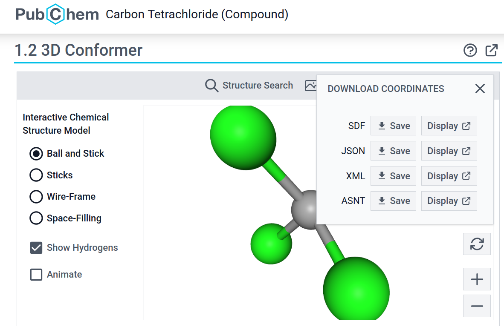

https://chemapps.stolaf.edu/jmol/jmol.php?model=water4 Usando o Jmol para observar moléculas em 3D
4.1 Onde começar ?
Pode-se começar a usar o Jmol de vários modos. Se for usar em seu computador ou notebook, ou mesmo a partir de uma mídia removível (pendrive), pode acessá-lo baixando, descomprimindo e executando o arquivo
Jmol.jar presente na pasta principal no site do Jmol. Agora, se não quiser instalar nada, pode também acessá-lo online a partir de diversos sítios. Nesse curso vamos utilizar um bem famoso, adaptado de um dos próprios desenvolvedores do programa. Basta clicar nesse link, numa nova aba, por exemplo:
Agora, clique na molécula com o botão esquerdo do mouse ou com o touchpad, e faça movimentos. Ou então gire o botão do meio do mouse ou realize gestos de afastamento e proximidade com dois dedos no touchpad. A Figura fig-telaInicio que segue ilustra o resultado.
Essa é a essência principal ao referenciarmos no título deste curso a ideia de moléculas voadoras.
4.2 Como carregar uma molécula online ?
Pra brincar um pouco com outra molécula, experimente mudar o modelo na própria página de internete, ao final da linha. Por exemplo, de water para tylenol:
https://chemapps.stolaf.edu/jmol/jmol.php?model=tylenol Você pode tentar fazer isso com outras moléculas, digitando seu nome em inglês, por tratar-se de um site estrangeiro. Mas é claro que o banco de dados dessa busca não é ilimitado, e por vezes o sistema não encontrará a molécula desejada.
Mas há alternativas. Uma delas é buscar o nome da molécula em um site utlizado como banco de dados, o PubChem. Exemplificando para a vitamina C (ácido ascórbico):
1. Entra no site do [PubChem](https://pubchem.ncbi.nlm.nih.gov/) ;
2. Procura por "ascorbic acid" ;
3. Se existir, digite esse mesmo termo ao final da linha do *JSmol online*, ou seja:
https://chemapps.stolaf.edu/jmol/jmol.php?model=ascorbic acid4.3 Como baixar uma molécula em seu computador
Caso você digite o nome da molécula no PubChem mas não a encontre após digitar seu nome no link do JSmol acima, é possível baixá-la no computador/notebook/tablet/smartphone a partir do site em formato lido pelo Jmol. Pra isso, siga os passos seguintes, exemplificados para o tetracloreto de carbono:
1. Entre no site do Pubchem (https://pubchem.ncbi.nlm.nih.gov);
2. No campo de busca digite "Carbon Tetrachloride";
3. Clique no 1o. composto;
4. Clique em "3D";
5. Clique em "Download coordinates";
6. Salve o arquivo clicando na opçao "Save" para SDF;
7. Forneça um nome mais "amigável" pro arquivo
4.4 Como construir a molécula e visualizá-la no Jmol
Existem diversos programas de desenho molecular, online ou por instalação, tais como os listados abaixo:
Também é possível unir o útil ao (quase)agradável, carregando uma molécula, adaptando-a ou construindo-a do zero, e visualizá-la diretamente no JSmol ! Para isso recomendamos os sites abaixo (imagem clicável):